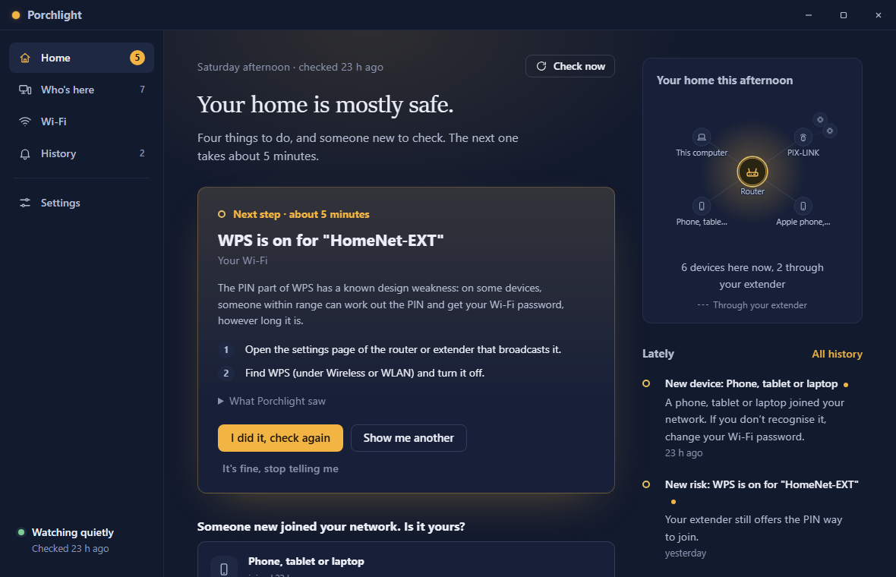
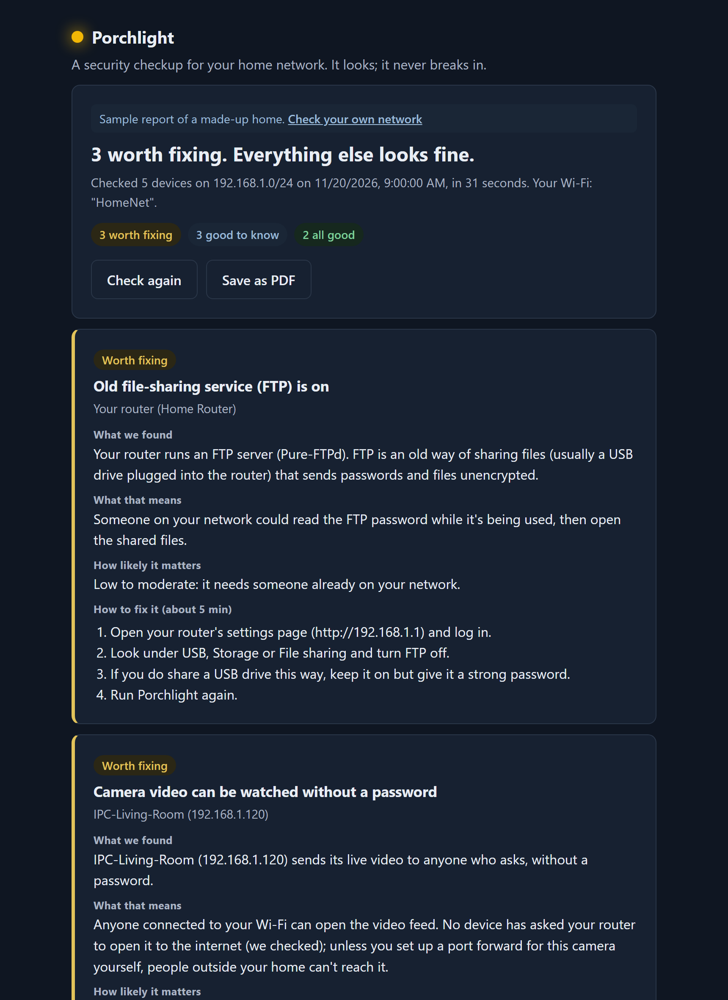

Worth fixingPL-WPS
WPS is on for "HomeNet-EXT"
Your extender still offers the 8-digit PIN way to join. On some models, someone within range can work it out. Turning it off takes about five minutes.
Porchlight finds every device on your Wi-Fi, checks for the few problems that actually matter, and explains each one in plain words, with the fix. It looks; it never breaks in.
Free and open source · Windows app, 3 MB · no account, nothing about you leaves your computer
Your extender still offers the 8-digit PIN way to join. On some models, someone within range can work it out. Turning it off takes about five minutes.
The Porchlight app lives in your tray, checks your home network every few minutes, and sends a notification when something changes. Written in Rust: 2 MB to download, about 25 MB of memory.

Windows 10 and 11 · 3 MB · installs for your user only, no admin needed. Updates are signed and only installed when you say so.
The installer isn't code-signed by Microsoft yet, so Windows may show "Windows protected your PC": choose More info → Run anyway. You can check the file: SHA-256 510987662926e362d45b54d55a7f0c1d81e227884dae962d022ad0b40d7a0d1a, and the source is on GitHub.
About thirty seconds for a typical home. You watch it happen on one calm screen.
Porchlight only checks the network this computer is on, after you say it's yours. Office ranges need the name of whoever authorised it.
"Living Room TV", "Sara's iPhone", "PIX-LINK extender": names come from what each device announces about itself, not from guesses.
Eighteen services that cause real trouble, like Telnet, FTP, camera streams and Android debugging. One door at a time, so small devices keep working.
Protection, WPS, and fake copies of your network's name, read from what your access points already broadcast. No special adapter needed.
A score out of 100, a map of your network, and every problem with the fix. Nothing in capitals, nothing in red.
A new device joined? Something you fixed is really gone? Porchlight remembers, on your computer only.
Every finding answers the same four questions, and its level is honest about how much it matters. Point at a question to see it in the example.
Fix soonWorth fixingGood to knowAll good
IPC-Living-Room (192.168.1.120)
The score, what changed since last time, and a map of your network. Tap a device to see only what was found on it.

The same calm explanations, plus what an IT team needs to track the work. Every finding carries a stable ID, a severity, what was observed, and the related CIS Controls v8 safeguards.
$ porchlight --scan --policy office.json \
--out report.html --out findings.csv
Authorised by: Jane Doe, IT manager
Score: 72/100 (A few things to tidy up)
[Medium] SMB signing not required PL-SMB-SIGNING
[Medium] TLS 1.0 still accepted PL-TLS-OLD
[Low] Self-signed certificate PL-CERT-SELFSIGNED
[Accepted until 2027-06-30] FTP on the NAS
Wrote report.html, findings.csv
exit 1 # a finding at or above failOnA checkup has to be safe to run on the network your family uses every day.
git clone https://github.com/aboutbeyrem/porchlight
cd porchlight
node bin/porchlight.jshttp://localhost:7377, confirm it's your network, pick your Wi-Fi name, choose Home or Office, and start the checkup.The full list is in the README.